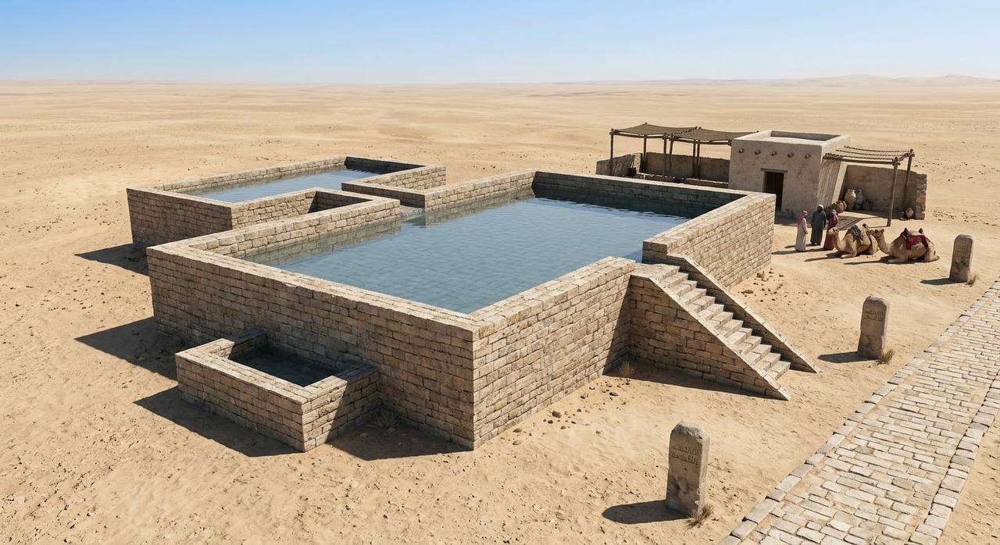
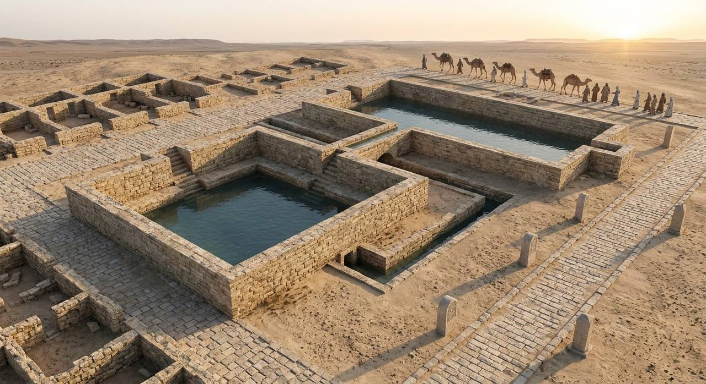
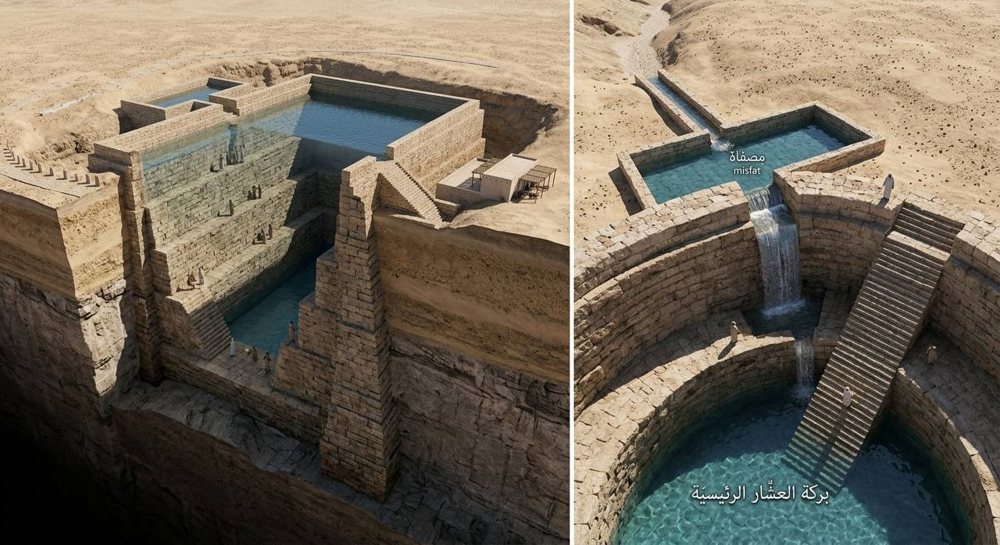

طريقٌ عبر الصحراء، حمل القوافل والمسافرين، وحفظت محطاته قصة الماء والسفر والهندسة والحضارة.
لم يكن درب زبيدة مجرد طريق تعبره القوافل، بل كان منظومة متكاملة من المحطات والآبار والبرك والمنشآت التي صُممت لخدمة المسافرين والقوافل في قلب البيئة الصحراوية.

تتميز بركة العشار بمساحتها السطحية الكبيرة وقدرتها الاستيعابية الضخمة للمياه، حيث صُممت لتكفي قوافل ضخمة جداً في وقت واحد.
تُجسد هذه الصورة مجمع برك زبالا التاريخي. لا تظهر هنا بركة واحدة، بل مجمع مائي متكامل مرصوف بالحجارة القوية، يضم بركة مربعة ضخمة وأخرى مستطيلة.


نرى هنا نموذجاً مختلفاً من المنشآت المائية: بركة الجميمة، التي تتميز بتصميمها المربع وتنظيمها الهندسي الدقيق.
تكشف برك درب زبيدة عن معرفة دقيقة بالبيئة الصحراوية واحتياجات القوافل. فقد ارتبط تصميم المحطات بتوفير الماء، وتنظيم الوصول إليه، والحفاظ عليه، وتحويل المحطات إلى نقاط استقرار واستراحة على امتداد الطريق.
الاستفادة من مياه الأمطار والسيول وتوجيهها نحو المنشآت المائية.
استخدام المراحل والفواصل والمصافي للمساعدة في الحفاظ على جودة المياه.
توفير نقطة أساسية للراحة والتزود بالماء خلال الرحلات الطويلة.
من خلال البرك والمحطات والمنشآت التي بقيت آثارها شاهدة حتى اليوم، نستطيع قراءة جانب من قصة درب زبيدة؛ قصة الإنسان الذي فهم الصحراء، وطوّر حلولاً للبقاء، وترك خلفه إرثاً هندسياً وثقافياً يستحق أن يُروى.